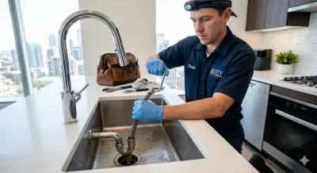
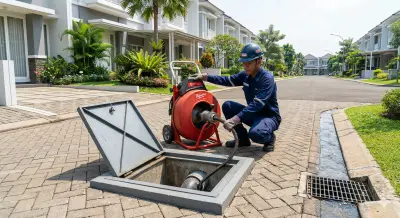
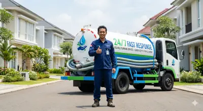
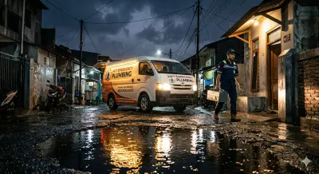

SOLUSI SPESIFIK AREA ANDA
Jaringan penanganan BEJOPELITA terspesialisasi di berbagai sudut Jabodetabek. Pilih area Anda untuk bantuan cepat.

Jakarta Selatan
Solusi Perbaikan Wastafel Apartemen.
Jakbar & Utara
Layanan Sedot Grease Trap Restoran.

Jakarta Timur
Ahli Mesin Ridgid untuk Bak Kontrol Mampet.

Kota Depok
Panggilan Darurat WC Mampet 24 Jam.

Tangerang
Pelancar Pipa Paralon Tanpa Bongkar.

DKI Jakarta
Tukang Saluran Mampet & Sedot WC Siaga.
Jakarta Pusat
Deteksi Pipa Bocor Bawah Tanah Akurat.
Ingin melihat profil perusahaan dan jangkauan korporat kami? Kunjungi portal resmi kami di BEJOPELITA Official Website.